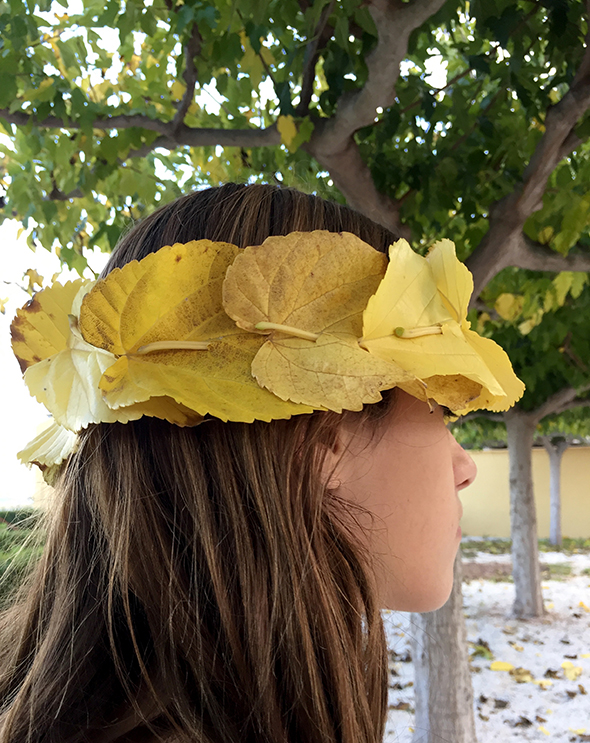
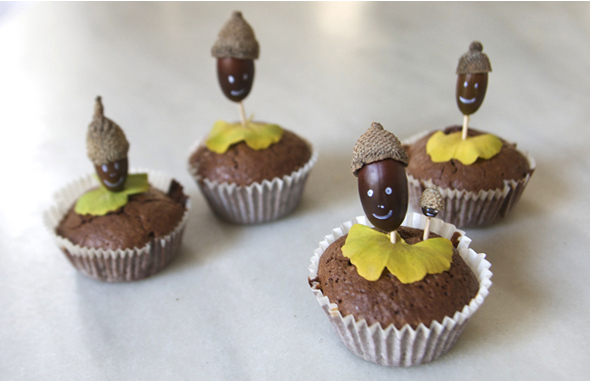
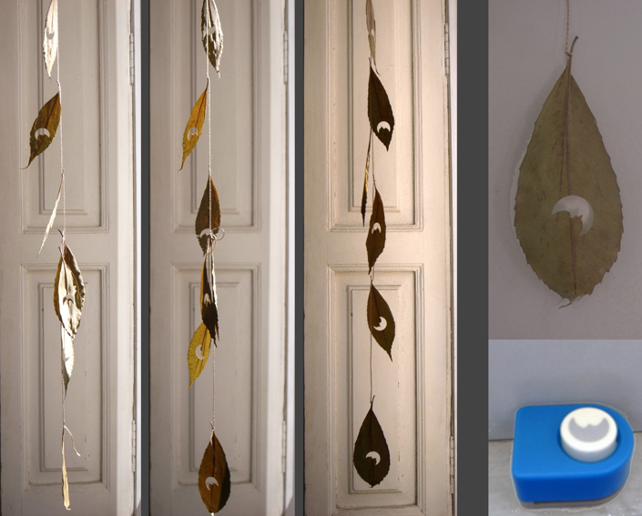
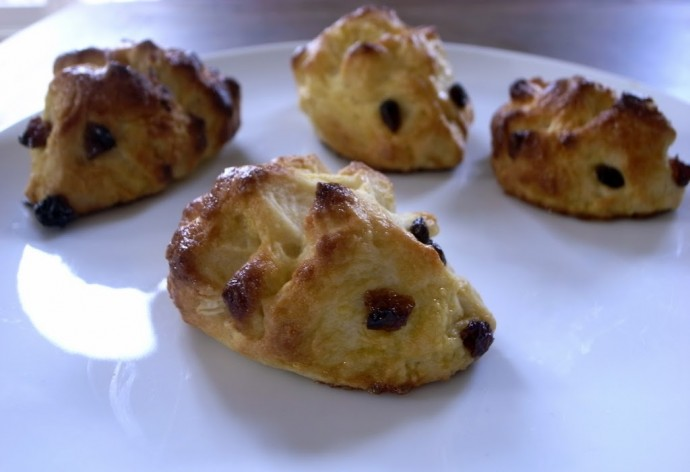
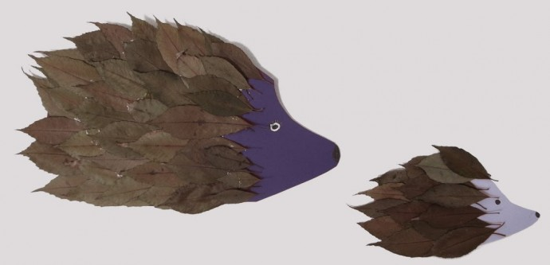
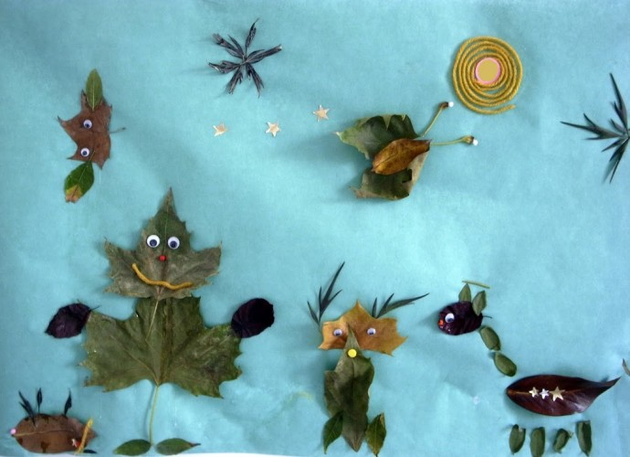
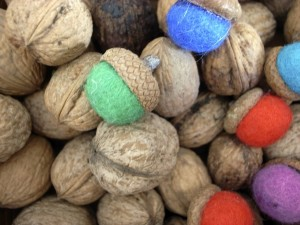

Inicio›Blog›TemporadasTemporadasPrimaveraOcasiónPlantarMaterialCollageOcasiónDecoración PascuaPapelMariposaPrimaveraBoniatoBotella PetFiestaPapelFlores de papelkidsmobileboxPrimaveraOcasiónMariposaOcasiónPrimaveraComidaPrimaveraMaterialSetas 02OtoñoCalendario de estacionesMaterialFlores 01PapelCometaPrimaveraFloresOtoñoÁrbolVer todo VeranoMaterialCollageOcasiónDecoración de mesaOcasiónConcha guirnaldaOcasiónDeseo de veranoVeranoAguaVeranoBombas de aguaVeranoJuegos de piscinaOcasiónJuego de canicaOcasiónCarnet de PezFrutaVeranoMaterialPulpoOcasiónBurbujasVeranoEstamos de vacaciones.VeranoRefrescoOcasiónPecesVeranoGlobosComidaVerdurasOcasiónConchasOcasiónBloques de hieloVeranoCuadro de veranoVer todo OtoñoMaterialFiguras de castañasMaterialCastañas con caraHojasHojasOcasiónFiguras de bellotasOcasiónTesoros del otoñoOcasiónOtoñoComidaHojasMaterialMandala GinkoMaterialCambiando escalaOcasiónHadaOtoñoSetasComidaCastañasOtoñoCalendario de estacionesOtoñoÁrbolMaterialCastaña de tiroMaterialJuego de vientoComidaErizos 02HojasErizos 01HojasCollageNuézColor del otoñoVer todo InviernoOcasiónBúhosMaterialCasa de mandarinaInviernoCasita de maderaImánPatinadoraInvierno2015CartónArbolesJugueteEsquiadorComidaRoscón de reyesOcasiónMuñeco de nieveOcasiónFeliz Año NuevoOcasiónFeliz NavidadOcasiónRegalos 02OcasiónRegalosComidaPaisaje de inviernoMaterialEsquiadorOcasiónVentana de inviernoOcasiónGuirnalda de nieveMaterialBúho nivalOcasiónBola de nieve 02OcasiónEstrellaVer todo